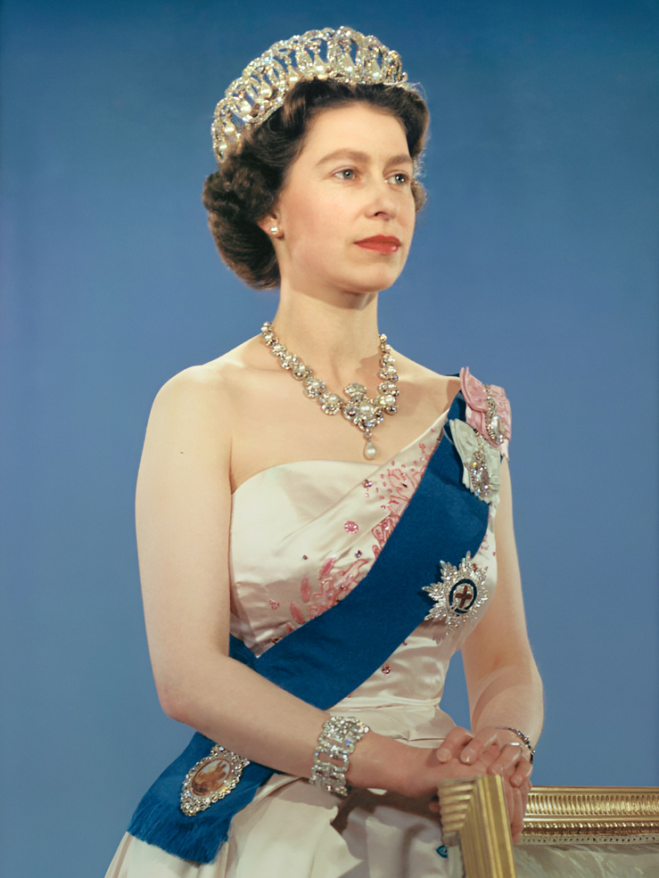

Welcome to the Royal Portfolio
Explore the life and achievements of Queen Elizabeth
Explore the life and achievements of Queen Elizabeth


Queen Elizabeth II, the longest-reigning monarch in British history, has been a symbol of continuity and grace for over seven decades. As the head of the Commonwealth, her influence extends far beyond the borders of the United Kingdom. Let's explore some general aspects of Queen Elizabeth II's role, impact, and contributions. Queen Elizabeth II ascended to the throne on February 6, 1952, following the death of her father, King George VI. Her reign has seen significant milestones, including the Silver Jubilee in 1977, the Golden Jubilee in 2002, the Diamond Jubilee in 2012, and the Platinum Jubilee in 2022. These events not only celebrated her enduring reign but also highlighted the continuity she represents in the monarchy. Despite being a symbol of tradition, Queen Elizabeth II has shown a remarkable ability to adapt to the changing times. Her reign witnessed the transformation of the British monarchy from a more reserved institution to one that engages with the public through various media channels. The queen's pragmatic approach and willingness to embrace modernization have helped maintain the relevance of the monarchy in contemporary society. The queen's role is largely ceremonial, involving state functions, public appearances, and diplomatic engagements. From the State Opening of Parliament to the Trooping the Colour ceremony, these events contribute to the pageantry and continuity of the monarchy. The queen's poise and dedication to her duties have earned her widespread admiration. As the head of the Commonwealth, Queen Elizabeth II has played a crucial role in fostering relationships among member nations. Her diplomatic efforts and commitment to the Commonwealth's values of cooperation and development have contributed to the organization's relevance on the world stage. Queen Elizabeth II has been actively involved in charitable endeavors and public service throughout her reign. Her patronage of numerous charities and organizations reflects her dedication to social causes, ranging from health and education to the environment. The queen's commitment to public service sets a powerful example for future generations. The queen's role as the matriarch of the royal family is central to the continuity of the monarchy. Despite facing personal and familial challenges, she has remained a stabilizing force. The birth and marriages of her grandchildren and great-grandchildren contribute to the narrative of a royal family that adapts to the expectations of the modern world. In conclusion, Queen Elizabeth II's reign has been characterized by continuity, adaptability, and a steadfast commitment to duty. Her impact extends beyond the borders of the United Kingdom, making her a respected figure on the global stage. As Queen Elizabeth II continues to fulfill her ceremonial duties and contribute to the welfare of her people, her legacy as a symbol of grace and continuity remains firmly entrenched in the annals of history.